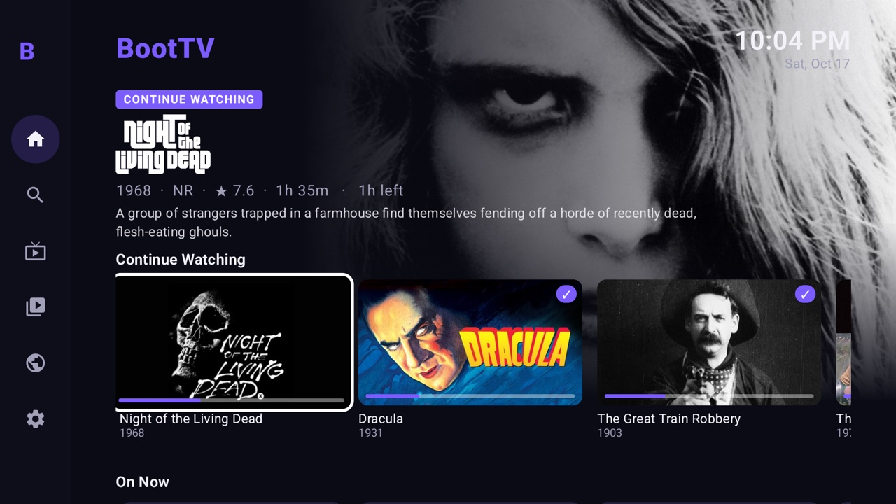
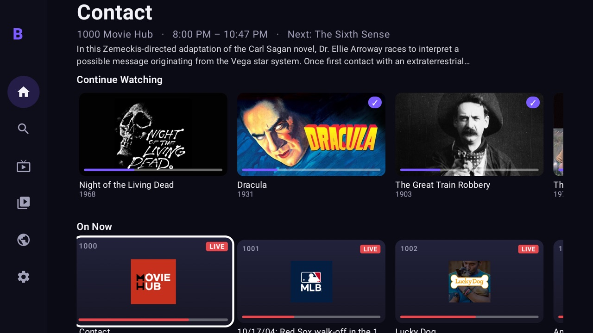
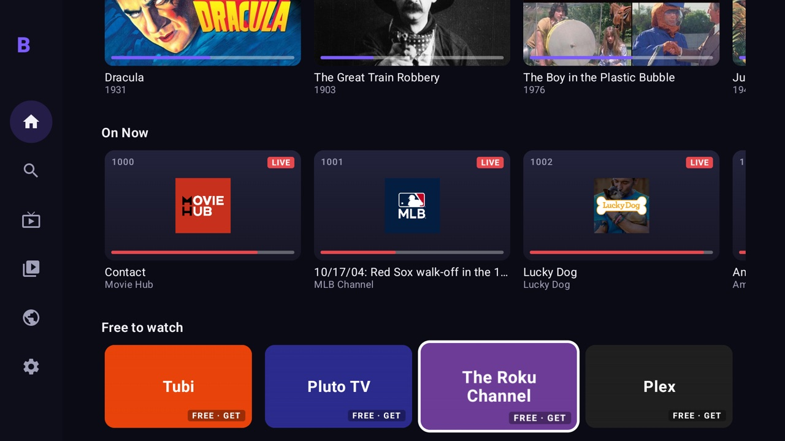
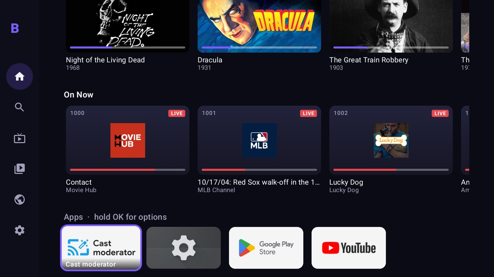
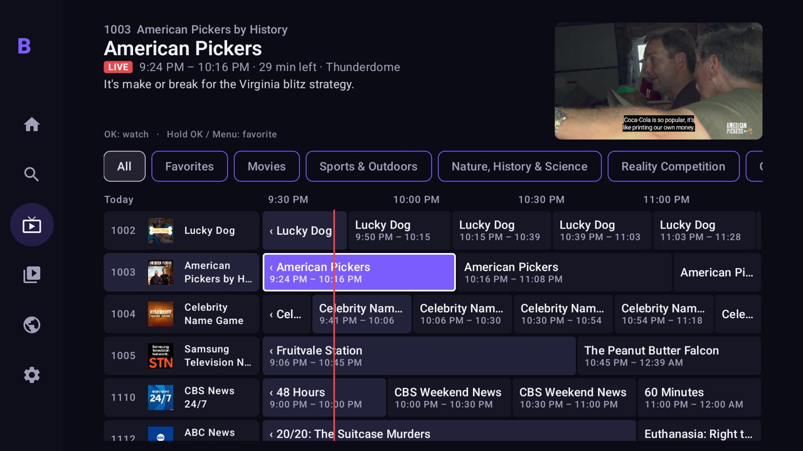
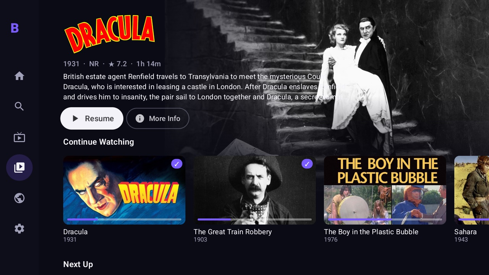
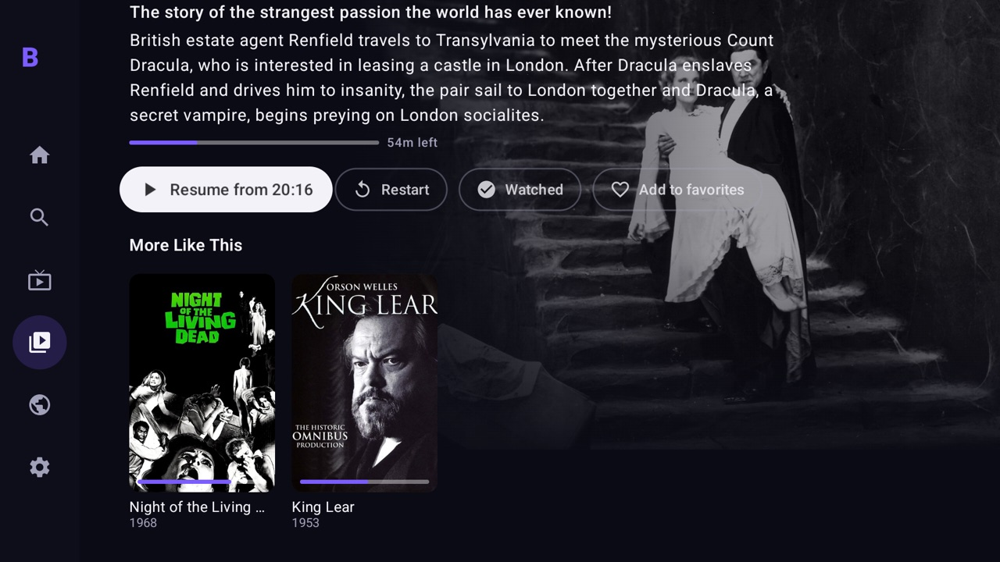
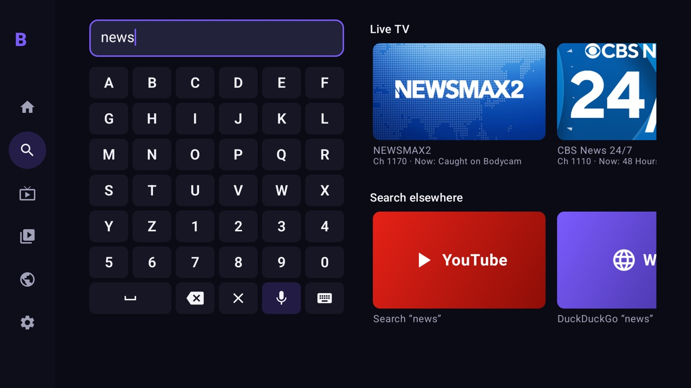
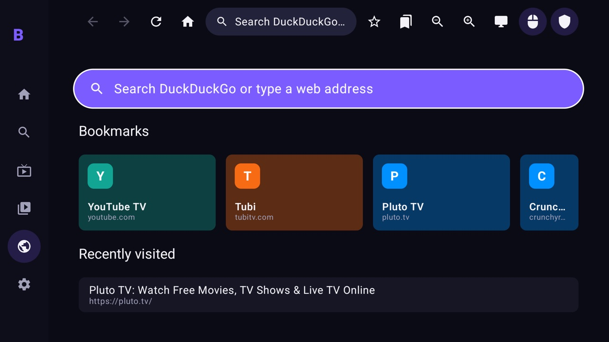
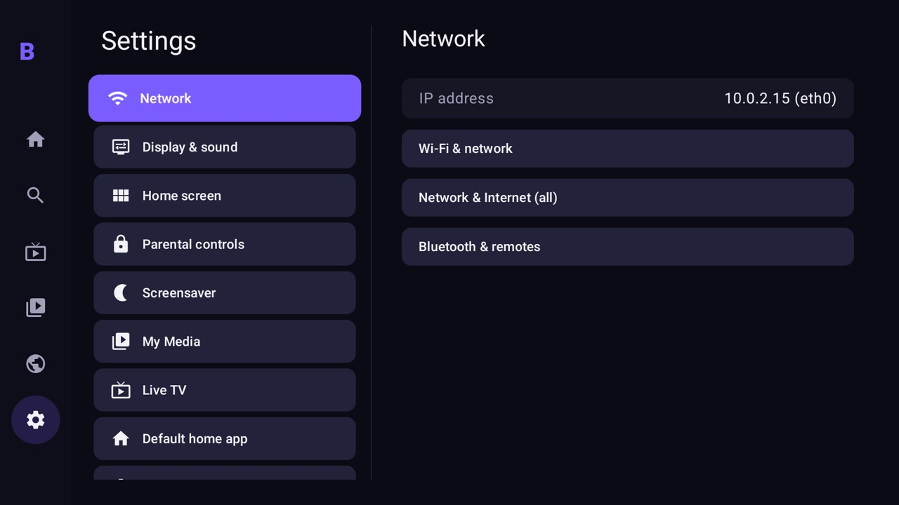

A Google TV HDMI stick runs BootTV, the ad-free Roku-style launcher we built: app grid, free live TV guide, your own movies, YouTube, a web browser and one search box for all of it.

This is the home screen you get. The banner follows whatever you highlight, and nothing on it is an ad.
| Roku stick | Stick + BootTV | |
|---|---|---|
| Ads on the home screen | Sponsored banner and promos | None |
| Pick up where you left off | Inside each app | On Home, across your movies |
| Free live TV guide | The Roku Channel | Pluto, Samsung TV Plus, Plex, Roku feeds |
| Your own movie files | Needs a separate app | Built in, Netflix-style |
| Web browser | None | Built in, with ad blocking |
| Free movie apps | In the channel store | Suggested on Home, one click to install |
| Netflix, YouTube, Prime, Disney+ | Yes | Yes, from the Play Store |
A plain HDMI stick that runs Google TV, so it can install BootTV and make it the home screen. It comes with a Bluetooth voice remote, and the mic button works with BootTV's voice search.
Check that the listing says “Google TV” and “2nd Gen”. The older 1st‑gen Mi TV Stick 4K runs Android TV 11. BootTV also works on it, but it is slower.
The one with a remote, not your cast-only puck. Google stopped making it, so it is mostly sold renewed now.
Renewed on Amazon →About $40 and a strong value pick, but it is sold at Walmart, not Amazon.
Search Walmart →








Real screenshots of the release build, taken on an Android TV test device at 1920×1080.
Plug the stick into the TV's HDMI port and power it from the included wall adapter. A TV's USB port is often too weak and causes restarts. Pick that HDMI input on the TV and pair the remote when asked.
Join your Wi‑Fi, the same network as your Mac, and sign in with a Google account so you get YouTube and the Play Store. You'll only see the stock home screen once.
Settings → System → About, then click Android TV OS build 7 times. Next go to Developer options and turn on USB debugging and, if you see it, Wireless debugging. Write down the TV's IP address from Settings → Network.
Open Terminal. Replace the IP with your TV's. If the TV shows a pairing code under Wireless debugging, use the second command. When the TV asks “Allow debugging?”, choose Always allow.
cd ~/Desktop/roku-boot && source env.sh tools/connect.sh 192.168.1.50
tools/connect.sh --pair 192.168.1.50:37123 123456 192.168.1.50:41234
This installs BootTV, makes it the home screen, and turns off the stock launcher, ad rows and telemetry. Nothing is uninstalled. --restore puts everything back.
tools/install.sh tools/debloat.sh --dry-run # preview first tools/debloat.sh
The remote's Home button now opens BootTV. Add your movies in Settings → My Media (guide in docs/jellyfin.md). Live TV works right away.
Roku remotes only talk to Roku devices. Use the stick's remote: D‑pad, OK, Back, Home and the mic all work with BootTV.
They install from the Play Store as usual and appear on the BootTV grid.
tools/debloat.sh --restore brings back the stock home screen and everything else that was turned off.
BootTV is tested on an Android TV emulator. When your stick arrives, send me its IP address and I'll install it and check it with you.